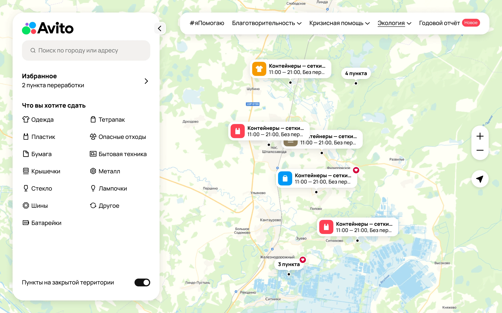
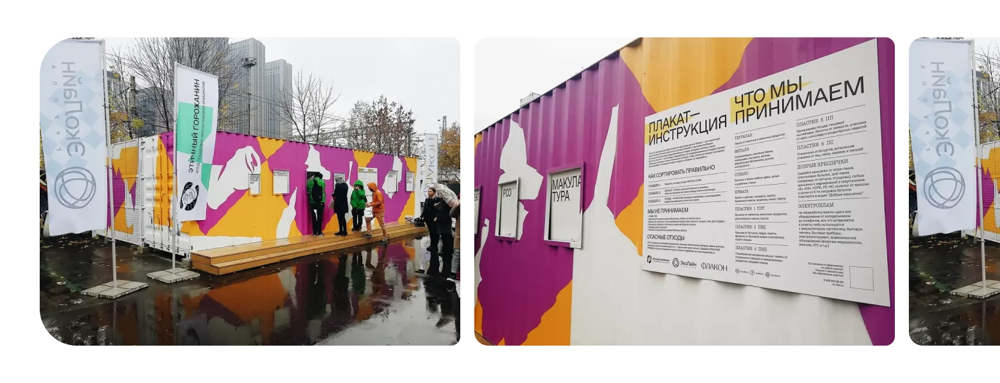
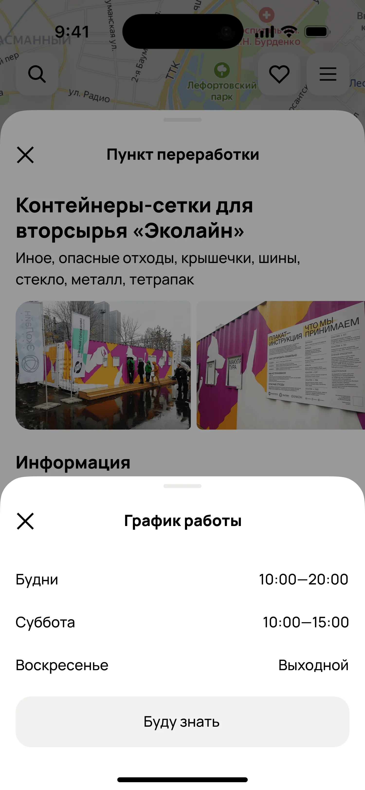

Карта раздельного сбора
Поиск, выбор и сохранение пунктов приёма

306K
Загрузок точек в день

1,5–3K
Открытий карточки
пункта в день

До 70
Сохранений точек в избранное в день
Роль
Выступала в роли продуктового дизайнера. Отвечала за весь сценарий.
Сделала
навигацию, поиск, фильтры

Добавила
избранное

Обновила
карточку пункта

Команда
Разработка длилась три месяца от постановки задачи до запуска. Общались всей командой.

Продакт
Обсуждали цели и гипотезы

Проджект
Согласовывали концепты

Бекенд
Продумывали логику

Фронтенд
Проводили дизайн ревью